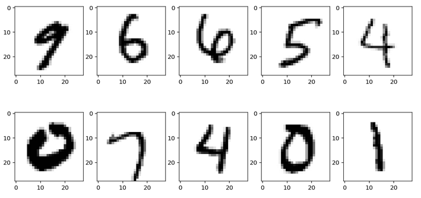

Keras
Ecole Nationale Supérieure de Cognitique

Summary
- Introduction to Keras
- Dense Neural Networks
- Neural Network Tuning
- Convolutional Neural Networks
Introduction to Keras
Keras in a nutshell
Python library for creating neural networks created by François Chollet.
High-level, user-friendly API above a ML/DL backend library.
Keras Vs tf.keras
- Originally, Keras was multi-backend: TensorFlow 1.x, Theano, CNTK…
- Since TF 2.0, tf.keras is the official high-level API of TensorFlow.
- The 2.3.0 release (Sept. 2019) will be the last major release of multi-backend Keras.
- TF users should switch to tf.keras.
Dense Neural Networks
The Keras API by example
Expected network architecture:

Network definition
# Sequential defines a linear stack of layers
from tensorflow.keras.models import Sequential
# Dense defines a fully connected layer
from tensorflow.keras.layers import Dense
model = Sequential() # Create a new network
# Add a 4-neurons layer using tanh as activation function
# Input shape corresponds to the input layer (no of features)
model.add(Dense(4, activation='tanh'), input_shape=(3,))
# Add a 4-neurons layer using tanh
# Input shape is infered from previous layer
model.add(Dense(4, activation='tanh'))
# Add a 1-neuron output layer using sigmoid
model.add(Dense(1, activation='sigmoid'))
Network compilation
# Configuration of the training process
# optimizer: gradient descent optimization method
# loss: loss function
# metrics: list of metrics monitored during training and testing
model.compile(optimizer='rmsprop',
loss='binary_crossentropy',
metrics=['accuracy'])
Training and evaluation
# Launch the training of the network on the data
# epochs: number of epochs to train the model
# (An epoch is an iteration over the entire training dataset)
# batch_size: number of samples used at each training iteration
# The returned history object contains the monitored metrics
history = model.fit(x_train, y_train, epochs=5, batch_size=64)
# Compute the loss value & metrics for the network on test data
loss, acc = model.evaluate(x_test, y_test, verbose=0)
MNIST, the “Hello World” of deep learning
Dataset of 70,000 handwritten digits, stored as 28x28 grayscale images.

Network architecture for MNIST
Network creation
from tensorflow.keras.models import Sequential
from tensorflow.keras.layers import Dense
# Create a (784, 15, 10) model
model = Sequential()
# Use ReLU for hidden layer
model.add(Dense(15, activation='relu', input_shape=(28 * 28,)))
# Use softmax for output layer
model.add(Dense(10, activation='softmax'))
model.compile('rmsprop',
'categorical_crossentropy',
metrics=['accuracy'])
One-hot encoding
Produces a matrix of binary vectors from a vector of categorical (int) values.
from tensorflow.keras.utils import to_categorical
x = np.array([1, 2, 0, 2, 1])
print(x.shape) # (5,)
# One-hot encoding
x = to_categorical(x)
print(x.shape) # (5, 3): 5 elements and 3 possible values for each one
print(x[0]) # [0. 1. 0.], corresponding to 1
print(x[1]) # [0. 0. 1.], corresponding to 2
print(x[2]) # [1. 0. 0.], corresponding to 0
print(x[3]) # [0. 0. 1.], corresponding to 2
print(x[4]) # [0. 1. 0.], corresponding to 1
Data loading and preprocessing
# Load the Keras MNIST digits dataset
(train_images, train_labels), (test_images, test_labels) = mnist.load_data()
# Reshape images data into a (number of samples, 28x28) matrix
x_train = train_images.reshape((60000, 28 * 28))
x_test = test_images.reshape((10000, 28 * 28))
# Change pixel values from (0, 255) to (0, 1)
x_train = x_train.astype('float32') / 255
x_test = x_test.astype('float32') / 255
# One-hot encoding of expected results
y_train = to_categorical(train_labels)
y_test = to_categorical(test_labels)
Neural network tuning
Regularization
Limit weights values by adding a penalty to the loss function.
# Add L2 regularization to a layer
model.add(Dense(16, kernel_regularizer=regularizers.l2(0.001),
activation='relu', input_shape=(10000,)))
Dropout
During training, some weights are randomly set to 0. The network must adapt and become more generic.
# Add a layer with 50% dropout during training
model.add(Dense(16, activation='relu', input_shape=(10000,)))
model.add(Dropout(0.5))
Convolutional Neural Networks
Model definition
from tensorflow.keras.models import Sequential
from tensorflow.keras.layers import Dense, Conv2D, MaxPooling2D, Flatten
# Define a CNN that takes (32, 32, 3) tensors as input
model = Sequential()
model.add(Conv2D(6, (5, 5), activation='relu',
input_shape=(32, 32, 3)))
model.add(MaxPooling2D((2, 2)))
model.add(Conv2D(16, (5, 5), activation='relu'))
model.add(MaxPooling2D((2, 2)))
model.add(Flatten())
model.add(Dense(120, activation='relu'))
model.add(Dense(10, activation='softmax'))
Corresponding architecture
Conv2D layer
Spatial convolution over images.
- Input: 4D tensor (
batch_size, rows, cols, channels) Output: 4D tensor (
batch_size, new_rows, new_cols, filters)# Add a Conv2D layer to a model # 64: number of filters # (3, 3): size of the convolution kernel (2D convolution window) # See https://keras.io/layers/convolutional/ for API details model.add(Conv2D(64, (3, 3), activation='relu'))
MaxPooling2D layer
Max pooling for spatial data.
- Input: 4D tensor (
batch_size, rows, cols, channels) Ouput: 4D tensor (
batch_size, pooled_rows, pooled_cols, channels)# Add a MaxPooling2D layer to a model # (2, 2): factors by which to downscale (vertical, horizontal) # See https://keras.io/layers/convolutional/ for API details model.add(MaxPooling2D((2, 2)))
Flatten layer
Flattens a tensor into a matrix. Often used before a Dense layer.
- Input: tensor with dimension >= 2
Output: 2D tensor
# Output shape: (None, 3, 3, 64) model.add(Conv2D(64, (3, 3), activation='relu')) # Add a Flatten layer to a model # Output shape: (None, 576) model.add(Flatten()) # Output shape: (None, 64) model.add(Dense(64, activation='relu'))
ImageDataGenerator class
Generate tensor batches with optional data augmentation in real time.
train_datagen = ImageDataGenerator(
rescale=1./255,
shear_range=0.2,
zoom_range=0.2,
horizontal_flip=True)
train_generator = train_datagen.flow_from_directory(
'data/train',
target_size=(150, 150),
batch_size=32,
class_mode='binary')
model.fit_generator(
train_generator,
steps_per_epoch=2000,
epochs=50)